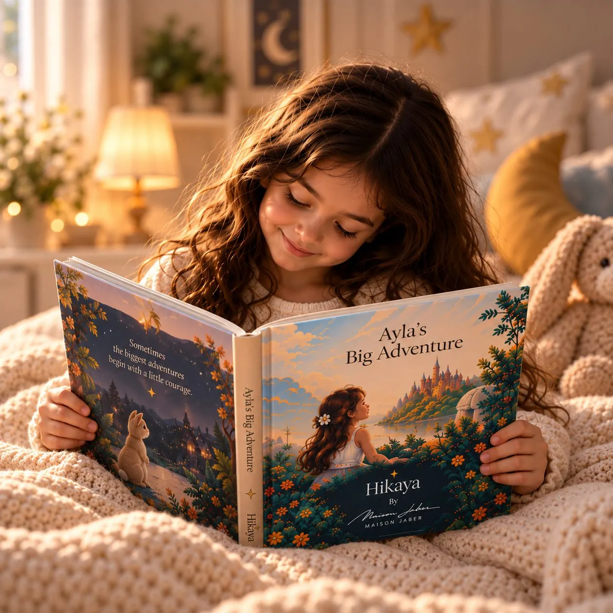

UAE National Day gift ideas for kids: 10 ways to celebrate Eid Al Etihad
Eid Al Etihad on 2 December is a lovely moment to celebrate home with children: the flag on the balcony, the long weekend, and a sense of belonging. Here are ten gift and activity ideas that make the day feel special for little ones.
1. A storybook where they are the hero
A personalised book with their name and illustrated face, and your National Day message on the first page, in Arabic or English. It is a gift they keep long after the celebrations. See personalised books in the UAE.
2. An outfit in the flag colours
Red, green, white and black, or a small traditional outfit for the family photo. Let them pick one accessory, like a scarf or a badge.
3. A flag craft afternoon
Paper, paint and stickers to make flags, bunting and window decorations. Children love seeing their work on display for the long weekend.
4. A visit to a heritage place
A heritage village or a museum such as Etihad Museum in Dubai or Qasr Al Watan in Abu Dhabi turns history into a day out. Check opening times for the holiday before you go.
5. A ghaf tree seedling
The ghaf is the UAE national tree. Planting one at home or school is a gift that grows with them, year after year.
6. A desert or camping weekend
The cooler December weather is perfect for a night under the stars, with stories by the fire and a simple picnic.
7. A children's book about the UAE
Picture books about the desert, the sea, pearl diving or falcons help young children connect with where they live.
8. A "what I love about home" letter
Ask them to draw or tell you what they love most about home, then keep it in a folder. Repeat every year and watch it grow.
9. A family photo in traditional dress
Print it and frame it for their room. It becomes a yearly tradition they look forward to.
10. A visit to family and grandparents
Ask grandparents to share how National Day was celebrated when they were young. Those stories are a gift in themselves.
Tip: order personalised gifts by late November
Personalised books are made to order, and Hikaya delivery takes about 5 working days in the UAE, so ordering by around 24 November keeps things relaxed before 2 December. Delivery is free across the UAE.